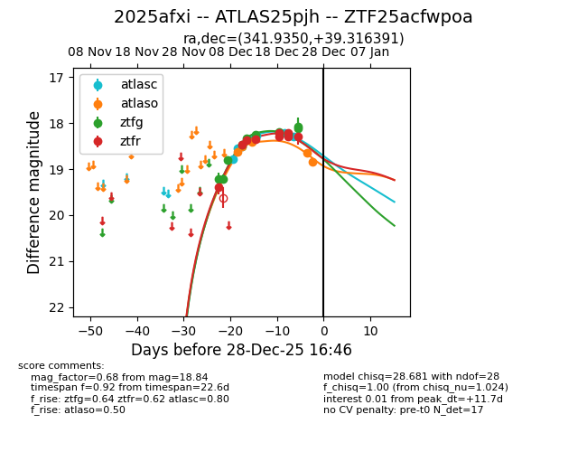
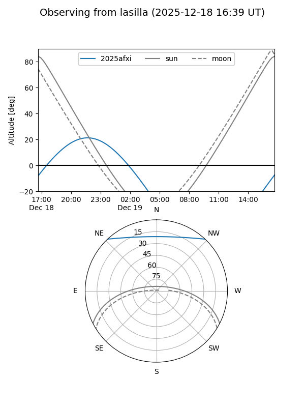
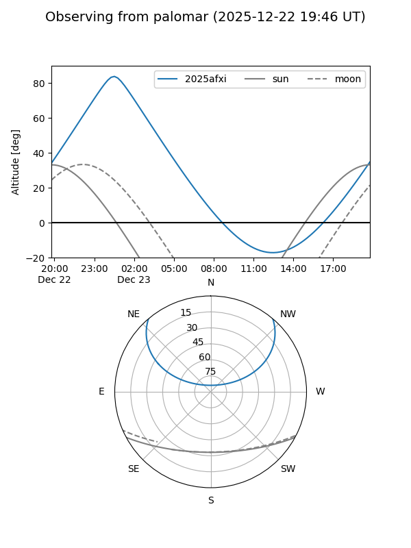
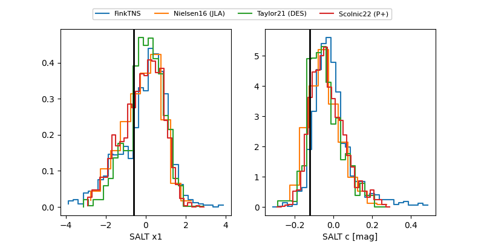

2025afxi
Target 2025afxi at 2025-12-21 03:08
Aliases and brokers:
FINK: fink-portal.org/ZTF25acfwpoa
Lasair: lasair-ztf.lsst.ac.uk/objects/ZTF25acfwpoa
ALeRCE: alerce.online/object/ZTF25acfwpoa
TNS: wis-tns.org/object/2025afxi
YSE: ziggy.ucolick.org/yse/transient_detail/2025afxi
alt names
ZTF25acfwpoa (ztf,fink_ztf)
2025afxi (tns,yse)
ATLAS25pjh (atlas)
Coordinates:
equatorial (ra, dec) = 341.9350,+39.31639
equatorial (HMS+DMS) = 22:47:44.40,+39:18:59.01
galactic (l, b) = (98.2848,-17.56302)
Flags:
Photometry:
last atlasc=18.27, atlaso=18.42, ztfg=18.23, ztfr=18.30
4 atlasc, 3 atlaso, 9 ztfg, 6 ztfr detections
Lightcurve

Visibility


Additional plots
